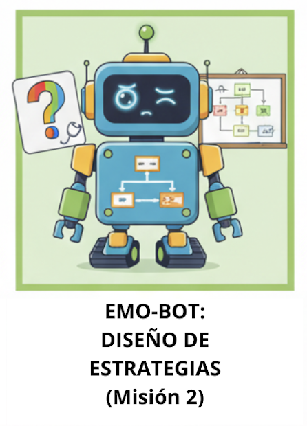
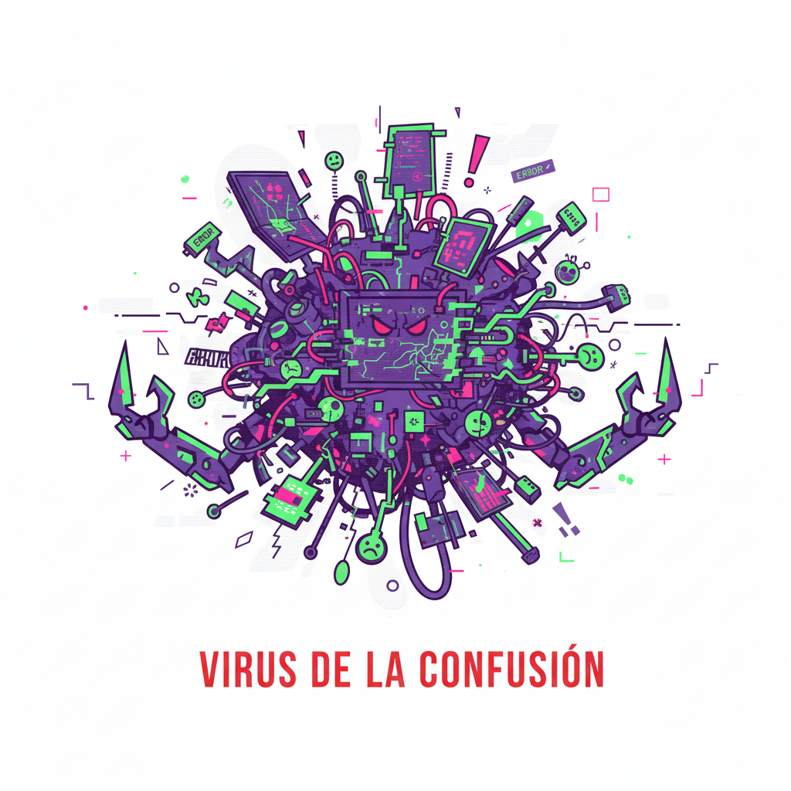

Misión 2: ¡Operación rescate! Construye tu escudo anti-caos.

"¡Escuadrón, excelente trabajo en la Misión 1! Ahora sabemos que emociones como la frustración y el enfado son nuestros principales enemigos (los villanos que consumen nuestros CK de energía). Pero el Virus de la Confusión aún no sabe cómo CALMARSE.

Mi sistema necesita un 'Código de Rescate'. Si mi luz se pone en Alerta Roja (intensidad 8-10), necesito un Protocolo de primeros auxilios robóticos que me obligue a parar, respirar y recalibrar.
Vuestra Misión 2 es: Crear el "Catálogo de Respuestas DUA". Debéis diseñar TRES tipos de estrategia de calma para la emoción más peligrosa (por ejemplo, la Frustración Máxima):
- Respuesta Visual: Algo que el robot o vosotros podáis ver para calmaros.
- Respuesta Auditiva: Algo que el robot o vosotros podáis escuchar para calmaros.
- Respuesta Kinestésica: Algo que el robot o vosotros podáis hacer con el cuerpo para calmaros.
¡Estas estrategias son la clave para crear el algoritmo de gestión en la próxima sesión! Si fallamos aquí, el robot nunca sabrá cómo actuar con empatía."